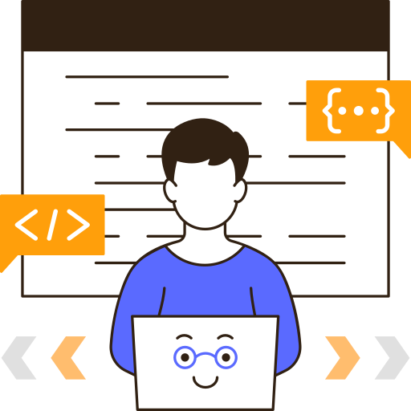

About
Saya menekuni pengembangan aplikasi mobile dan web, dengan pengalaman dalam merancang serta membangun platform menggunakan teknologi seperti Java, Python, JavaScript, dan Kotlin. Selain itu, saya juga mengerjakan proyek-proyek berbasis Internet of Things (IoT) menggunakan Arduino. Dengan semangat untuk terus meningkatkan keterampilan, saya berfokus pada proyek praktis dan kolaboratif guna menciptakan solusi inovatif di dunia teknologi.
Android Studio
Saya sangat menekuni pengembangan aplikasi Android menggunakan Android Studio dengan bahasa pemrograman Kotlin. Dengan pemahaman mendalam tentang fitur-fitur canggih Android Studio, seperti editor layout, debugging, dan pengujian, saya berkomitmen untuk menciptakan aplikasi yang intuitif, responsif, dan berkualitas tinggi.
Internet of Things
Saya memiliki pengalaman dalam pengembangan proyek Internet of Things (IoT) menggunakan Arduino, yang memungkinkan saya untuk merancang sistem cerdas yang dapat mengumpulkan dan memproses data dari berbagai sensor. Dengan fokus pada inovasi, saya berusaha menciptakan solusi yang dapat meningkatkan efisiensi dan fungsionalitas dalam berbagai aplikasi IoT.

Web Development
Saya sangat menekuni pengembangan web dengan menggunakan teknologi seperti JavaScript, HTML, dan CSS untuk menciptakan situs yang interaktif dan responsif. Dengan pemahaman mendalam tentang framework seperti Laravel, saya berkomitmen untuk membangun aplikasi web yang tidak hanya menarik secara visual tetapi juga memiliki kinerja yang optimal dan pengalaman pengguna yang baik.
Experience & Skills
Android Studio
mobile Wisata di indonesia dan mobile pemesanan Tukang
2023 - 2024
Internet of Things.
pelacak Ikat Pinggal pintar dan sistem monitoring air sungai
2022 - 2024
Web Development.
Portal desa dan Web di Smp
2023 - 2024
Saya menekuni pengembangan web menggunakan HTML, CSS, JavaScript, dan Laravel untuk membangun aplikasi yang interaktif dan responsif, serta pengembangan aplikasi Android melalui Android Studio dengan Kotlin, dan juga proyek Internet of Things (IoT) menggunakan Arduino, yang memungkinkan saya menciptakan solusi teknologi inovatif dan berkinerja tinggi.
- Html
- Css
- Javascript
- Mysql
- IoT
- KOTLIN
- Laravel
- ReactJs
- ExpressJs
- CodeIgniter
- Android Studio
- Arduino